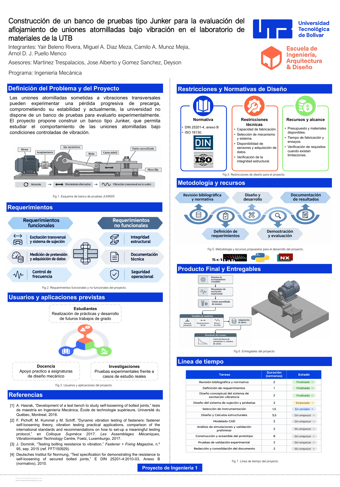

Resumen del proyecto
Las uniones atornilladas sometidas a vibraciones transversales pueden experimentar una pérdida progresiva de precarga, comprometiendo su estabilidad y actualmente, la universidad no dispone de un banco de pruebas para evaluarlo experimentalmente. El proyecto propone construir un banco tipo Junker, que permita estudiar el comportamiento de las uniones atornilladas bajo condiciones controladas de vibración.
Producto final: un banco de pruebas tipo Junker funcional, instrumentado y validado, que quedará en el laboratorio de la Facultad como herramienta de apoyo a la docencia y la investigación.
El banco medirá: Fuerza de pretensiónDesplazamiento transversalFrecuencia de excitación
¿Cómo funciona un ensayo Junker?
En el ensayo Junker, la unión atornillada que se quiere evaluar sujeta una placa móvil (placa deslizante) contra una placa fija. Un mecanismo excéntrico mueve la placa móvil de forma transversal al eje del tornillo, con una amplitud y una frecuencia definidas. Mientras tanto, un sensor mide la fuerza de apriete en tiempo real y la grafica contra el número de ciclos [2], [3].
Si el movimiento transversal vence la fricción que genera la pretensión, hay deslizamiento entre las superficies de contacto y el tornillo tiende a aflojarse [2]. Los requerimientos del banco se definen tomando como referencias la DIN 25201-4, anexo B, y la ISO 16130.
Objetivos
Objetivo general
Diseñar y construir un banco de pruebas tipo Junker que permita evaluar de manera experimental el comportamiento al aflojamiento de uniones atornilladas (tornillos y tuercas) sometidas a vibración transversal controlada, como herramienta de apoyo a la docencia y la investigación en la Facultad de Ingeniería Mecánica de la UTB.
Objetivos específicos
- Establecer los requerimientos funcionales y técnicos del banco de pruebas tomando como referencias la DIN 25201-4, anexo B, la ISO 16130 y las capacidades del laboratorio.
- Diseñar el banco de pruebas, incluyendo el sistema mecánico de excitación vibratoria transversal, el sistema de sujeción de las probetas atornilladas y la selección del sistema de instrumentación.
- Construir y ensamblar el prototipo del banco de pruebas conforme al diseño, integrando el sistema de instrumentación.
- Validar experimentalmente y garantizar el correcto funcionamiento del equipo mediante ensayos preliminares con uniones atornilladas de referencia.
Equipo y asesores
Integrantes
- Yair Beleño Rivera
- Miguel A. Díaz Meza
- Camilo A. Muñoz Mejía
- Arnol D. J. Puello Menco
Asesores
- Martínez Trespalacios, José Alberto
- Gómez Sánchez, Deyson
Programa: Ingeniería Mecánica
Póster


Aquí puedes ver el póster completo del proyecto y descargarlo.
Referencias
- [1]A. Hasrak, “Development of a test bench to study self-loosening of bolted joints,” tesis de maestría en Ingeniería Mecánica, École de technologie supérieure, Université du Québec, Montreal, 2018.
- [2]F. Pichoff, M. Kummel y M. Schiff, “Dynamic vibration testing of fasteners: fastener self-loosening theory, vibration testing practical applications, comparison of the international standards and recommendations on how to set-up a meaningful testing protocol,” en Colloque Supméca 2017, Les Assemblages Mécaniques, Vibrationmaster Technology Centre, Foetz, Luxemburgo, 2017.
- [3]J. Dominik, “Testing bolting resistance to vibration,” Fastener + Fixing Magazine, n.º 95, sep. 2015 (ref. FFT150929).
- [4]Deutsches Institut für Normung, “Test specification for demonstrating the resistance to self-loosening of secured bolted joints,” E DIN 25201-4:2010-03, Anexo B (normativo), 2010.
- [5]K. Peffers, T. Tuunanen, M. A. Rothenberger y S. Chatterjee, “A design science research methodology for information systems research,” J. Manage. Inf. Syst., vol. 24, n.º 3, pp. 45–77, 2007, doi: 10.2753/MIS0742-1222240302.
- [6]A. R. Hevner, S. T. March, J. Park y S. Ram, “Design science in information systems research,” MIS Q., vol. 28, n.º 1, pp. 75–105, 2004, doi: 10.2307/25148625.
- [7]Deutsches Institut für Normung, “Dynamic testing of the locking characteristics of fasteners under transverse loading conditions,” DIN 65151. Citada en [3].
- [8]G. H. Junker, “New criteria for self loosening of fasteners under vibration,” SAE Transactions, vol. 78, 1969. Citado en [2], [3].